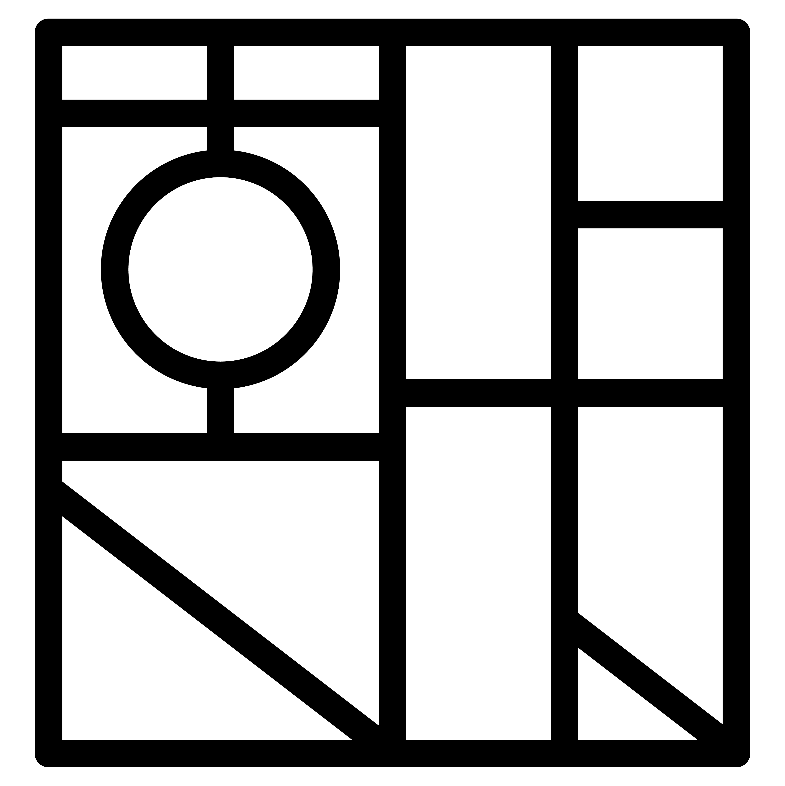

Kit
Receipe
설날
정월대보름
추석
동지
혼자 전통 놀이를 즐기며 명절을 쇨 수도 있지만, ‘명절 음식’과 관련된 키트이자 선물 세트를 기획했습니다.
2019년 1월 23일부터 1월 26일까지 2,30대 40인을 대상으로 한 ‘명절 문화 조사’에 따르면, ‘응답자가 명절을 쇠는 방법’에 대한 응답으로는 ‘가족, 지인이 만든 명절 음식을 먹는다’(32인, 80%), ‘시중에 파는 명절 음식을 먹는다’, ‘외부 공간에서 간단한 식사 자리를 갖는다’(각 15인, 37.5%), 그리고 ‘명절 음식을 직접 만들어 먹는다’(12인, 30%)의 순의 응답 결과가 나왔습니다.
응답자가 ‘알고 있는 명절’로 응답한 항목의 경우 1~4위를 구정(40인, 100%), 추석(40인, 100%), 정월대보름(31인, 77.5%), 동지(29인, 72.5%)가 차지했습니다.
이에 따라 명절을 쇠는 것과 명절 음식을 먹는 것에 깊은 연관이 있다 해석하여 직접 명절 음식을 만들어 먹을 수 있는 키트를 기획했습니다. 키트를 기획할 명절은 응답 결과에 따라 인지도가 높은 네 명절인 구정, 추석, 정월대보름, 동지로 정했습니다.
Jiwon Sung_
Seoul Natl’ Univ.
Department of Design
(Industrial Design)
Jimyung Woo_
Seoul Natl’ Univ.
Department of Design
(Visual Communication Design)